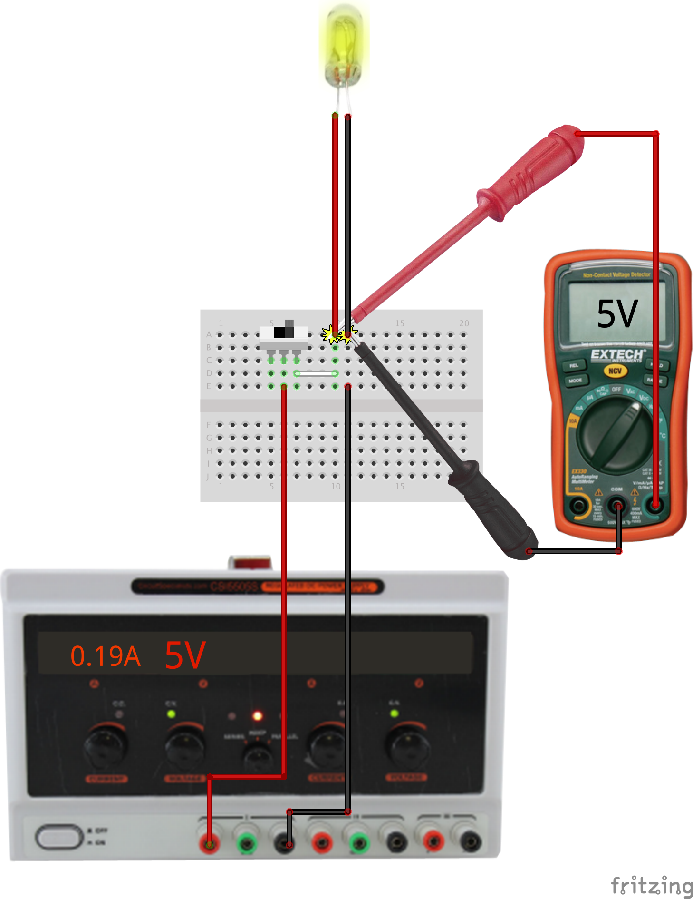

Exercise: Power Switch
Objective
Test a simple circuit on a breadboard.
We will use solderless breadboards a lot for prototyping circuits. The
connection points accept component leads and solid wire. Each short row
of five points is connected internally and is used for signal connections.
The long rows along the edges are connected internally and are normally
used for power distribution.
The easiest way to connect a bench supply to a breadboard is with solid
core wire which can plug directly into the buss connections at top and
bottom of the solderless breadboard. It's a good habit to follow a
consistent color code with red for positive and black for ground.
Steps and observations
- Wire and test the circuit as shown with a switch and a bulb.
- Measure the voltage across the lamp in both on and off states.
Voltage is measured between two points; the meter is placed
in parallel with the lamp.
- Current is measured through a conductor; measuring the lamp current
requires connecting the meter in series with the lamp by
disconnecting either wire leading to the lamp and connecting the meter
across the opened connection.
- Set the meter to DC current mode (mA) and move the positive probe to
the connector for current.
- Open the lamp circuit, connect the meter in-circuit, and observe the
current in both on and off states.
- The lamp acts as a resistor. What is the computed resistance in the
on state? This can be calculated from the current measured for a given
applied voltage.
Comments
The basic rules of current flow and voltage potentials in a circuit graph
are captured
by Kirchhoff's
circuit laws.


Other Files
- 1.a.i.3_power-switch.fzz